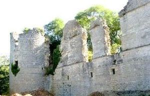
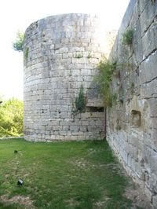
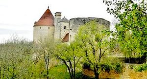
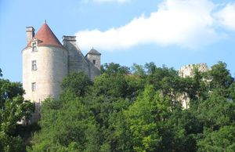
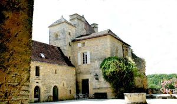

Recensement Jean-Claude Truffet
| Département | 46 — Lot |
| Canton | Espère |
| Commune | Concorès-Linars |
| Type d'édifice | Château |
| Période d'origine | XIII-XVI |





CLERMONT, au XIIIe siècle le fief appartient à une famille de chevaliers, les Gavis. Il en rende hommage aux guerres de Mechmont. Le fief rentre dans les possessions de la famille de Touchebuf lors du mariage, en 1449, de l'héritière du château, Marquèse de Gavis, avec Jean Touchebuf, procureur du roi. Ils sont à l'origine de la branche des Touchebuf-Clermont. Le château des Gavis est sorti ruiné de la guerre de Cent Ans. Les Touchebuf-Clermont vont entreprendre de le relever au XVIe siècle. En 1642, la seigneurie et baronnie de Clermont est érigée en comté en faveur de messire Antoine de Touchebuf. Après la mort de Jacques-Victor de Touchebuf, comte de Clermont, en 1689, sa fille Anne de Touchebuf, mariée en 1670 à Armand II de Durfort, comte de Boissières, lui transmis la seigneurie de Clermont. Un procès a été fait par son cousin François de Touchebuf, seigneur de Monsec, pour la substitution des biens de la seigneurie. Par un accord passé en 1699, Anne de Touchebuf céda la seigneurie de Besse avec la justice à son cousin et conserva le château de Clermont. Le seigneur du lieu ayant émigré pendant la Révolution, en 1791, le château est mis sous séquestre. Laissé à la garde du régisseur, celui-ci, après s'être approprié les biens qui s'y trouvaient, en a brûlé les archives. Le château est ensuite vendu comme bien national et partagé entre plusieurs acquéreurs qui finissent de le piller et de le transformer en carrière de pierres. Le château est acheté en 1930 par Jeanne Palluel qui s'est employée à le restaurer après l'avoir fait classer au titre des monuments historiques. Depuis 2001, monsieur et madame Lust ont entrepris des travaux à l'extérieur et à l'intérieur pour restaurer le corps de logis principal, les anciennes écuries, la chapelle, les murs d'enceinte et les salles voûtées du XIIIe siècle.
Le château est constitué de trois corps de logis ordonnés autour dune cour dhonneur fermée au nord-est par une courtine dans laquelle était placée lentrée. Celle-ci était défendue par un pont-levis franchissant un fossé sec, et par deux grosses tours circulaires avec canonnières. Une enceinte extérieure, aujourdhui détruite. Il ne subsiste de laile nord-ouest que le soubassement dans lequel se succèdent des salles voûtées et un four à pain. Laile sud-ouest, reconstruite au XVIe siècle sur les vestiges dun corps de logis du XIIIe siècle, constituait le corps de logis principal réservé à la salle de justice et aux appartements. Ses différents niveaux sont desservis, non pas comme dans les anciennes forteresses par un escalier à vis mais, comme dans les châteaux de Montal et dAssier, par un escalier à rampes droites dont les voûtes sont ornées de motifs décoratifs de la Renaissance Française. La façade arrière et la façade sur cour étaient percées de fenêtres à croisées détruites sous la Terreur. Les deux tours circulaires qui encadrent ce bâtiment englobent à la base les vestiges des tours du XIIIe siècle, dont les salles basses voûtées ont été complétées de canonnières. Les étages supérieurs étaient ouverts par des croisées à traverses moulurées, et munis de cheminées en pierre et de latrines. Abandonné à partir de la Révolution, le château fut pillé, détruit par ses différents propriétaires pour être réduit en une immense carrière de matériaux. La chapelle a été classée au titre des monuments historiques le 3 août 1932 et le reste du château a été inscrit au titre des monuments historiques le 7 novembre 1932.
Famille de Touchebuf-Clermont
"
Château de Clermont à Concorès-Linars